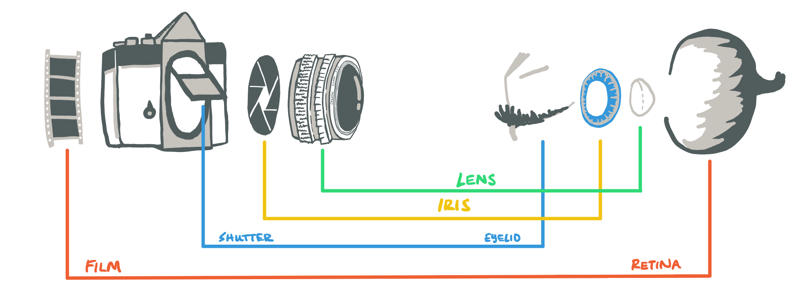

Other
Resources
Computational Models of Social Cognition – an Introduction
I made this before graduate school to better understand Bayesian models of social cognition.
Open PDFIntro to R Programming
I wrote this for my students and RAs to learn the basics of R from a programming perspective.
Open in NotionCamera & Eye
Enjoy this diagram I drew comparing a camera to an eye. I got into film cameras and sketching during covid and think this nicely captures how mechanical models help us understand human systems. In a similar way, computers can help us understand the mind despite some clear differences.

Apps
Some tools I've vibe-coded for myself.
Timer
A tool I use (when I'm being good) to keep track of my progress on tasks. You can make new color-coded categories and see your weekly progress on the Stats page.
timer.aajbaker.comNepali
I've been learning Nepali, for which there aren't many good online resources, so I made this to practice. It's structured as flashcards to test knowledge of basic vocabulary and sentences.
nepali.aajbaker.com